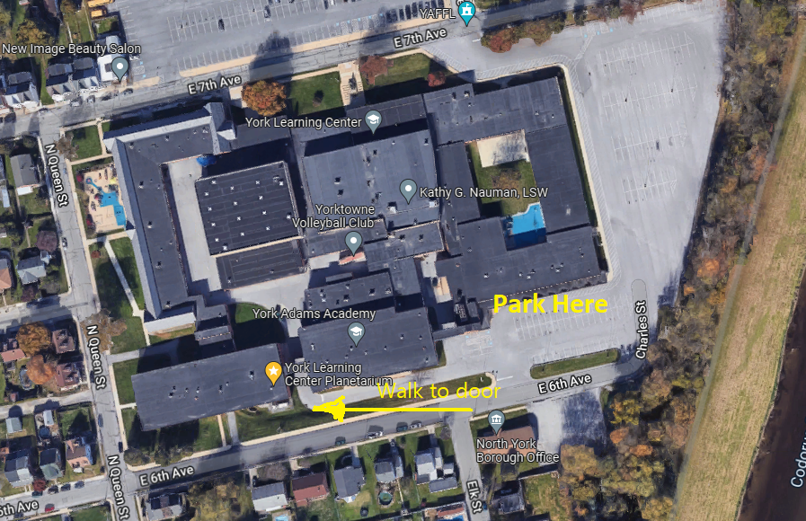

Directions
York Learning Center Planetarium
 York Learning Center Planetarium on Google Maps
From Route 30 take George street and head south towards downtown York and turn left on East 6th Avenue (You will see a sign that says Elite Staffing Service at the turn to East 6th Avenue) take East 6th Avenue and you will come to one stop sign, continue on East 6th Avenue up a slight hill and you will see the school on left at Elk street, from East 6th Avenue after passing Elk St., turn left into the parking lot behind the York Learning Center. Park. Walk west along access road west towards the planetarium which is halfway towards the west end of the building (Door 19).
John Rudy County Park Observatory
Directions for the location of John Rudy County Park.
Take Route 30 to Route 24 exit, and go north over the hill. When you get to the bottom of the hill, turn right at the traffic light. Go over the creek, and turn left at the “S” turn—-be careful, and watch for southbound speeders. Go about 1⁄2 mile, turn into the park entrance at the split rail fence. The observatory is in the field off to the left of the gravel parking lot. Look for foot path or cut across grass field. At night look for the red light at observatory on slight hill.
The GPS coordinates of the observatory are: N40.0244 W076.7047
Notice: DO NOT use Dellinger road. GPS Navigators will tell you to but go to park entrance which is 300 feet from the Park Admin office entrance off Mundis Race road, park entrance is at top of small grade/hill. Follow park road. The observatory is in the field off to the left of the gravel parking lot. At night look for the red light at observatory. Be sure not to park in the Administration Offices Parking Lot (a barn and two buildings).
See below Entrance to John Rudy Park and YCAS Observatory
Follow red lines off of Mundis Race road into park entrance. There are two parking lots. Yellow lines show path you may take or you may just cut across the grass to observatory. Park restrooms are indicated near parking lot.
See: Map of Observatory location below. Click on map to enlarge.
For information on events, scheduling a private party star watch, directions to the observing site, or for general Society information, please email YCAS at: info@astroyork.com
Membership applications are available upon request. For more on current events call 717 759 YCAS (9227) recorded message.